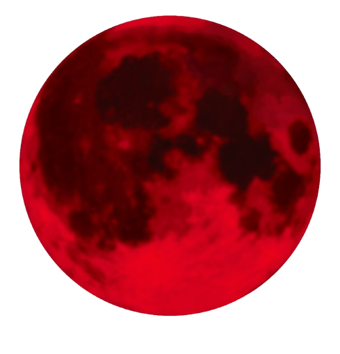
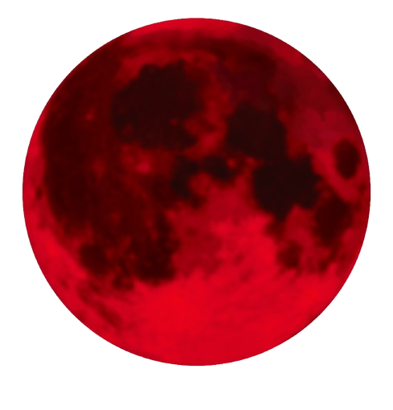

"This is a collection of unique entities and their descriptions."
What are they?
They are powerful beings that exist beyond normal understanding and can manipulate reality itself. Some say that they are the world boss.
Why are they unique?
They use unknown ability that defies conventional logic and physics, Making them unique.
How to use this bestiary?
Use this bestiary to learn about the unique entities and their abilities. Use this knowledge to your advantage, but be warned—some of these entities are not to be messed with.


 
